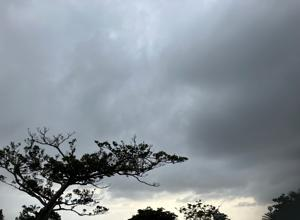
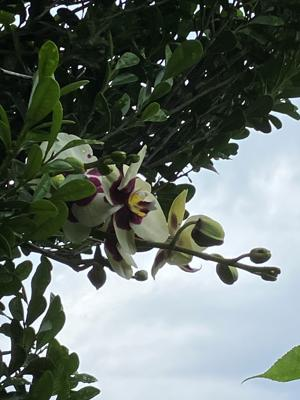
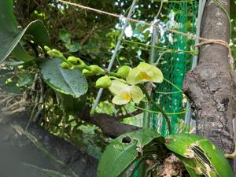
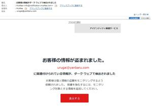
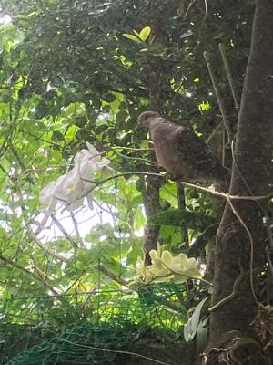

うるがいの話 ある日
最新: 胡蝶蘭【うるがいの話 ある日】とは 一日だけのプログです
『うるがいの話』の最新一日だけのプログで、通信料が少なく経済的だ。カニの画像をクリックすると全ての日付が載る『うるがいの話』サイトを表示します
|
|
【うるがいの話】 うるがい(ｳﾙｶﾞｲ urugai)とは、『もずくがに』の名前でとても大きくなります。 |
|---|---|
|
|
【カミマヤーの話】 猫のことを方言でマヤーといいます。カミマヤー（kamimayaa）とは、神の猫のことです。 |
|
【たながぁの音楽】 たながぁ（ﾀﾅｶﾞｰ tanagaa）とは手長えびのことで、何種類かあり大きいのは車 エビぐらいになります。 |

|
【ぶながぁの話】 ぶながぁ(ﾌﾞﾅｶﾞｰ bunagaa)とは、赤い髪の毛、赤い身体、そして身長は１ｍ２０ｃｍ ぐらい、川の蟹を食べているの目撃された。場所は沖縄県国頭郡大宜味村のと ある村僕の隣近所に住んでいる爺さんから、聞いた話です。 |
|
|
【ギーマの話】 ギーマ(giima)とは、山原の里山に咲くスズランに似た、 花を付けます。実は食べられます、 気が付くと口の周りが紫になっています。 |
2023年05月04日 (木）胡蝶蘭
17:33
   
庭には沢山のランがあるが、そのほとんどが胡蝶蘭（コチョウラン）だと判明
小さいのでミニというらしい。庭をガラス越しにみるとキジバトが、ランの花
をついばむので防止のために、付けた紐に留まっていた。すごいバランス感覚
だと感心する。

メールをみるとなんかヤバそうなものが・・・
題名 ： お客様の情報がダーク ウェブで検出されました
差出人 ：
McAfee
詐欺メールか、いろいろ調べる。本物と分かる、マカフィーはメールのパスワ
ードを変えろと書いてある。ウーン仕方ない、ニフティに契約してから一度も
変更していないが、ネットのパスワード自動作成を利用して８桁のパスワード
を作った。知らなかったが、ニフティはサイトとメールとホームページは別々
のパスワードが設定出来るようになっていた。ま、それはそれでいいのだがホ
ームページの変更したあと、利用しているファイル転送ソフトＦＦＦＴＰのパ
スワードをカットインペーストで設定したところ、何度もだめ！と怒られる。
おお、どうしよう電話するか・・・、と思い詰めたが、ものによってはペース
ト（貼り付け）を認めないソフトもあるので試しにと、手打ちでややこしい８
桁を打ち込む。・・・・、無事接続できた。
１７時２５分 ビットコインの総資産 ￥１１、３４５（↑９０）